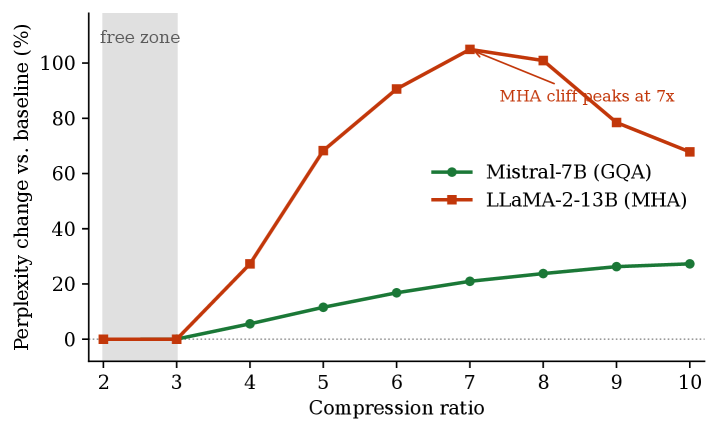

Why it matters왜 중요한가
At long context the KV cache — not the model weights — sets the ceiling on throughput. Shrinking it without hurting quality is a direct lever on how cheaply a model serves long inputs.
긴 컨텍스트에서는 모델 가중치가 아니라 KV 캐시가 처리량의 상한을 결정한다. 품질을 해치지 않고 이를 줄이는 것은 모델이 긴 입력을 얼마나 싸게 서빙하는지에 직접 작용하는 레버다.
The paper's contribution is less a new trick than a new frame. A 2-D factorization has to pick one axis of redundancy and ignore the rest; a fixed-bit quantizer can't even reach the modest 2–3× band where quality is still free (4-bit already overshoots to ~4×). By pricing Tucker ranks and residual bits on the same error scale and solving one budgeted allocation, JoLT lands exactly in that intermediate band — and shows it is essentially free. The catch, stated plainly by the authors, is that the win today is in persistent storage, not decode speed.
이 논문의 기여는 새로운 트릭이라기보다 새로운 관점이다. 2차원 분해는 중복의 한 축만 고르고 나머지를 버려야 하고, 고정 비트 양자화는 품질이 아직 공짜인 2–3× 대역에 도달조차 못 한다(4비트는 이미 ~4×로 넘어간다). Tucker 랭크와 잔차 비트를 같은 오차 척도로 값 매기고 하나의 예산 배분으로 풀어, JoLT는 바로 그 중간 대역에 정확히 착지하고 그것이 사실상 공짜임을 보인다. 저자들이 분명히 밝힌 한계는, 오늘의 이득이 디코드 속도가 아니라 영속 저장에 있다는 점이다.

By the numbers핵심 숫자
Reconstruction fidelity — the headline result재구성 정확도 — 핵심 결과
| Method방법 | K error ↓ | V error ↓ | vs JoLTJoLT 대비 |
|---|---|---|---|
| JoLT (ours) | 0.009 | 0.006 | —— |
| int4 per-channel | 0.080 | 0.131 | 9–22× worse9–22× 나쁨 |
| xKV (cross-layer SVD) | 0.077 | 0.237 | 9–40× worse9–40× 나쁨 |
Values shown for Mistral-7B (GQA); LLaMA-2-13B is identical for JoLT and within a few % for baselines. int4 is a fixed-rate quantizer whose floor sits at ~3.97×, so it cannot actually express a 2× point — it is shown at its native rate.
표시된 값은 Mistral-7B(GQA) 기준이며, LLaMA-2-13B는 JoLT에서 동일하고 baseline은 수 % 이내 차이다. int4는 하한이 ~3.97×인 고정 비율 양자화기라 2× 지점을 실제로 표현할 수 없어 자기 native 비율로 표기했다.
The three moving parts세 가지 핵심 요소
Partial Tucker
Decompose the layer tensor but truncate only the token and feature modes (via ST-HOSVD), leaving head and layer axes as identity factors. Letting a full 4-mode allocator loose just reverts head/layer to full rank anyway — and the partial form runs 2.4–3.0× faster than full HOOI.
레이어 텐서를 분해하되 토큰·피처 모드만 자르고(ST-HOSVD) 헤드·레이어 축은 항등 인자로 둔다. 4모드 배분기를 풀어놓으면 어차피 헤드·레이어를 풀 랭크로 되돌린다 — 부분 형태는 풀 HOOI보다 2.4–3.0× 빠르다.
Rotated low-bit residual
Pure low-rank throws away real energy — fatal on values' flat spectrum. JoLT takes the truncation residual, applies a random orthogonal (JL) rotation to spread out outliers, and quantizes it at b∈{0,2,4,8} bits. This is the lever that turns a lossy backbone near-lossless.
순수 저랭크는 실제 에너지를 버린다 — value의 평평한 스펙트럼에선 치명적이다. JoLT는 절단 잔차에 랜덤 직교(JL) 회전을 걸어 이상치를 퍼뜨린 뒤 b∈{0,2,4,8} 비트로 양자화한다. 이것이 손실 백본을 거의 무손실로 바꾸는 레버다.
One Lagrangian dual
Ranks and residual bits compete for the same bytes, so JoLT prices both on one error scale and minimizes total error under a byte budget B. A single multiplier λ, tuned by bisection, moves budget between ranks/bits and between keys/values — funding the hard value residual, starving the easy key residual.
랭크와 잔차 비트는 같은 바이트를 두고 경쟁하므로, JoLT는 둘을 하나의 오차 척도로 값 매기고 바이트 예산 B 하에서 총 오차를 최소화한다. 이분법으로 조정되는 단일 승수 λ가 랭크/비트 그리고 key/value 사이로 예산을 옮긴다 — 어려운 value 잔차엔 몰아주고, 쉬운 key 잔차엔 줄인다.
How it works어떻게 작동하나
- Measure the spectrum.스펙트럼을 측정한다. Unfold the cache along each axis: head ratio ≈1.5 (incompressible), keys hit 10% error at rank 228/1024 but values need 563/1024 — values are 2–3× harder. 캐시를 각 축으로 언폴딩: 헤드 비율 ≈1.5(압축 불가), key는 랭크 228/1024에서 10% 오차지만 value는 563/1024 필요 — value가 2–3× 더 어렵다.
- Group & partial-Tucker.그룹화 후 부분 Tucker. Partition layers into contiguous groups; per group and per K/V, truncate only token/feature modes to ranks (r_T, r_d). 레이어를 인접 그룹으로 나누고, 그룹·K/V별로 토큰/피처 모드만 랭크 (r_T, r_d)로 자른다.
- Rotate & quantize the residual.잔차를 회전·양자화. Take R = X − X̃, apply a JL rotation, quantize at ≤4 bits to recover discarded energy; decode inverts the rotation. R = X − X̃를 취해 JL 회전을 걸고 ≤4비트로 양자화해 버려진 에너지를 복원; 디코딩은 회전을 역산한다.
- Allocate jointly.공동 배분. Solve the Lagrangian relaxation cell-by-cell over a finite (r_T, r_d, b) grid; bisect λ until total bytes = budget B. 유한한 (r_T, r_d, b) 격자에서 셀 단위로 라그랑주 완화를 풀고, 총 바이트 = 예산 B가 될 때까지 λ를 이분한다.
- Go fast (FlashJoLT).빠르게(FlashJoLT). Swap the exact token-mode SVD for a randomized one with tail-mass accounting → 5–13× faster, same free-zone quality. 정확한 토큰 모드 SVD를 tail-mass 보정이 있는 랜덤화 SVD로 교체 → 5–13× 빠르고 프리존 품질은 동일.
What to take away그래서, 가져갈 것
A 2–3× KV cache is essentially free: perplexity, GSM8K, and RULER retrieval all stay within noise of the uncompressed baseline on both a GQA and an MHA model.
2–3× KV 캐시는 사실상 공짜다: perplexity·GSM8K·RULER 검색이 GQA와 MHA 모두에서 무압축 기준 대비 노이즈 수준을 유지한다.
Treat the cache as a tensor, not a matrix. Different axes carry wildly different redundancy — spend the budget only where it exists (token & feature), pin what doesn't (head & layer).
캐시를 행렬이 아닌 텐서로 다뤄라. 축마다 중복이 천차만별이다 — 중복이 있는 곳(토큰·피처)에만 예산을 쓰고 없는 곳(헤드·레이어)은 고정하라.
Keys ≠ values. Values have a flat spectrum and are 2–3× harder to compress, so they deserve separate rank and bit budgets — the joint dual exploits exactly this asymmetry.
key ≠ value. value는 스펙트럼이 평평해 2–3× 압축이 어려우므로 별도의 랭크·비트 예산을 받아야 한다 — 공동 쌍대가 바로 이 비대칭을 활용한다.